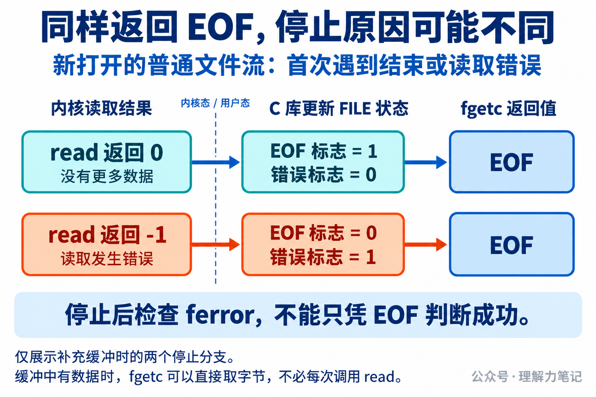

文件只剩一个字节，程序已经把这个字节读出来了，feof 却仍然是 0。继续用 while (!feof(fp)) 判断，循环还会进入下一轮。此时真的还有数据可处理吗？
feof查询的是“这个流是否已经记录过文件结束”，不能预测下一次能否读到数据。先读取，取得有效数据才处理；读取停止后，再检查是否发生错误。
这篇文章怎么读？
| 你是谁 | 看哪一章 | 会得到什么 |
|---|---|---|
| 搜索者 / 被推荐者 | 第一章 · 先解决问题 | 用一个字节看清循环为什么还会进入 |
| 学习者 | 第二章 · 机制解释 | 分清返回值、流标志和内核读取结果 |
| 编程者 | 第三章 · 工程使用 | 可编译的复制函数和调用示例 |
| 求职者 | 第四章 · 面试提炼 | 解释正常结束与读取错误的区别 |
实测环境是 macOS 14.8.8 x86_64、Apple clang 16.0.0，未在 Linux 主机实测。Linux/glibc 的机制另用规范和源码核对。
下面的短程序从标准输入读取，打印读取前、每次成功读取后和停止时的状态。ch 用 int 保存，才能同时容纳有效字节值和 EOF。保存为 feof_short.c：
在实验目录编译，然后准备一个只有 A、没有换行的文件：
本机实际输出如下，退出状态为 0。代码中的 != 0 把标志统一显示为 0 或 1；接口本身只保证零或非零。
第二行已经读到了文件唯一的字节，65 是本机的 A，但结束标志仍为 0。第三行对应下一次读取：这次确实没有字节可取，fgetc 才返回 EOF 并设置结束标志。
所以，!feof(fp) 成立时，下一次读取仍可能失败。如果进入循环后不检查 fgetc 的返回值，就会把 EOF 当成有效数据处理。
正确循环同样需要最后一次读取尝试。区别在于，示例先判断返回值，只有 ch != EOF 才进入循环体。
还验证了空文件、换行、二进制数据和读取错误。结果如下，表中的字节值均为十进制：
| 输入 | 成功交给循环体的字节 | 停止时的状态 |
|---|---|---|
| 空文件 | 无 | feof=1，ferror=0 |
只有 A |
65 | feof=1，ferror=0 |
A 后跟换行 |
65、10 | feof=1，ferror=0 |
二进制 00 FF |
0、255 | feof=1，ferror=0 |
| 目录（本机错误路径） | 无 | feof=0，ferror=1 |
普通文件四组均退出为 0。目录组退出为 1，并报告 fgetc: Is a directory；目录的打开与读取行为依平台而异，这里只把目录当作本机已验证的错误输入。
实验中的 stdin 指向 C 库管理的 FILE 对象。输入缓冲区和流的状态都由 C 库管理；feof 查询结束标志，ferror 查询错误标志。查询标志不会读取新字节，也不会根据文件大小预测还有多少内容。
以 Linux/glibc 的普通文件读取为例：缓冲区还有字节时，fgetc 可以直接取出一个字节返回。需要补充缓冲且尚未记录结束时，C 库才通过底层 read 等操作读取文件。
内核通过文件描述符 fd 找到打开的文件，返回本次实际读到的字节数。读到数据就返回正数；没有更多数据时返回 0；读取发生错误时返回 -1。C 库根据底层结果更新 FILE 状态，再决定 fgetc 返回什么。

这就解释了一个容易混淆的地方：内核 read 返回 0，与 C 库 fgetc 返回 EOF，不是同一个接口的结果。fgetc 返回 EOF 既可能表示结束，也可能表示读取错误。
表中的目录输入就是例子：读取失败后，错误标志为真，结束标志仍为假。此时 !feof 依然成立，程序若只看这个条件，就可能反复读取同一个错误输入。带三次上限的补充探针验证了这一现象，测试没有运行无界循环。
图中展示的是新打开流的两种停止原因。标志会保留历史状态，不能推广为任何时候都恰好一个为真。clearerr 可以清除标志，却不会移动文件位置或修复读取故障。
上述缓冲路径依据 glibc 2.40 源码，图是机制示意，不是 macOS 实验的内部执行记录。
把实验中的“打印字节值”换成“写入目标流”，就得到下面的函数。保存为 copy_stream.c，可以直接编译使用。
函数借用两个独立的流：src 可读且没有遗留错误，dst 可写；调用期间由当前流程独占读写。复制普通文件时，输入和输出不能是同一文件，以免覆盖或干扰读取。
while 只把有效字节交给 fputc。循环因 EOF 停止后，ferror(src) 为真就报告读取失败；在上述前提下，没有读取错误就可以按正常结束处理，无须在每次读取前查询 feof。
fputc 和最终的 fflush 也必须检查。否则输入虽然读完，目标流仍可能没有完整写出。函数返回 0 表示复制及输出刷新成功，返回 -1 表示失败；失败前可能已经输出一部分数据，函数不会回滚。
下面是完整的调用入口，保存为 copy_main.c，与前面的 copy_stream.c 一起编译。两个代码块共同组成完整程序，编译时把两个源文件同时交给编译器。
这里使用预先打开的标准输入和标准输出，没有额外打开文件。在 POSIX 环境中，失败后应立即保存或诊断 errno；对有效流调用 ferror 不会改变 errno，因此复制函数可以先查标志，再让调用方报告原因。
如果调用方自己通过 fopen 创建输入、输出流，调用方还需要在复制结束后分别关闭，并检查关闭结果。复制函数只借用流，不负责关闭；关闭成功也不能抹掉复制失败。
实测中，空输入和包含全部 256 种字节的输入均正确复制。读取目录、输出文件大小上限为 0 两种失败也都返回错误。示例选择报告错误，不自动重试；输出刷新成功不等于磁盘持久化。
fgets 按是否返回非空指针判断有没有字符串可处理，fread 按实际返回的元素数量处理。尤其要注意：fgets 可能返回末尾有效字符串，同时设置 EOF 标志。不能把本篇 fgetc 实验的时机套到所有输入函数上。
单字节文件说明：读到最后一个字节后，feof 仍可能为 0，下一次读取才发现结束。读取错误说明：没有得到字节，也不一定会设置结束标志。
因此，读取返回值决定有没有数据可处理，流的状态标志解释为什么停止。不能只靠 !feof 决定循环是否继续。
本文为公众号「理解力笔记」原创。转载请联系作者，并保留出处。